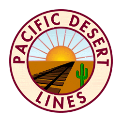
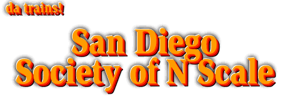

The San Diego Society of N Scale (SDSoNS) is located in the San Diego Model Railroad Museum in Balboa Park, San Diego, California. Their web site is at http://sdsons.org

--Back to da trains--
©2003 blanchard design, all rights reserved